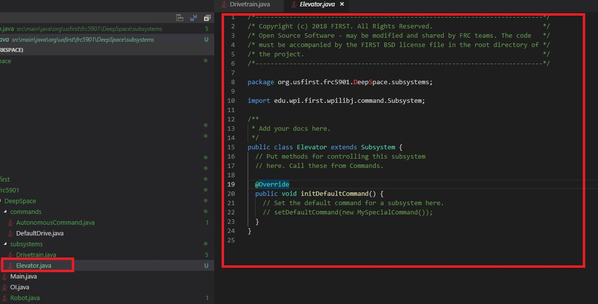

Overview
Subsystems represent a unique aspect of the robot.
They are composed of motor controllers and sensors.
The methods (or functions) within a subsystem control specific motors.
Creating Subsystems
To create a subsystem, right click subsystems in the explorer and select Create a new class/command.
Select subsystem, and then name the subsystem appropriately.

After you have finished, you have created a subsystem.
In the example below, I created a "Elevator" subsystem.

Adding Motor Controllers/Sensors
Now that we have a subsystem, we will need to define the motor controllers and sensors.
In Java, you must first create the object.
Add however many motor controllers is needed to operate your subsystem, depending on what motor controller will be used for the subsystem (consult with electrical team to find out).
TalonSRX
Declaration -
private WPI_TalonSRX leftElevatorMotor;
Instantiate/Initializing (create an object) The number corresponds to the CANId of the motor controller
leftElevatorMotor = new WPI_TalonSRX(1);
VictorSPX
Declaration (assign variable name to object)
private WPI_VictorSPX leftElevatorMotor;
Instantiate/Initializing (create an object) The number corresponds to the CANId of the motor controller
leftElevatorMotor = new WPI_VictorSPX(1);
Creating Methods
A method is a function of the subsystem. For example, some functions of an elevator may be to lift to a certain height, lower, or to stop. To make an elevator stop, the example method is created to stop the elevator.
public void stopElevator(){
leftElevatorMotor.set(0.0);
}
This sets the elevator motor that we created earlier at 0 percent voltage.